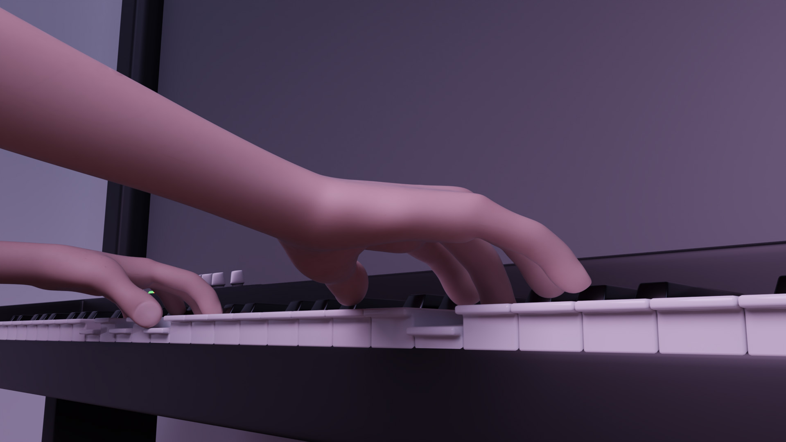
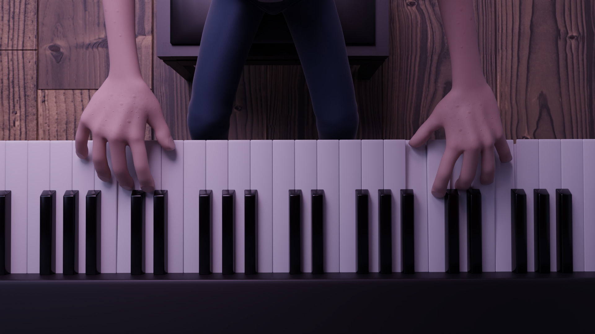
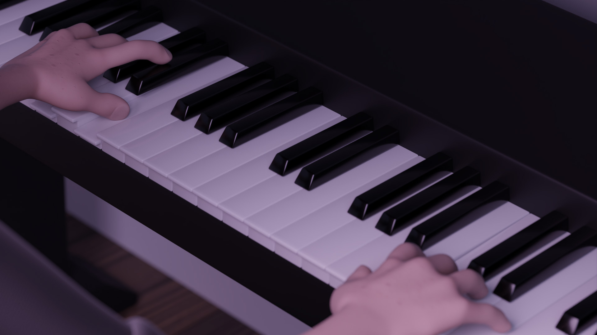
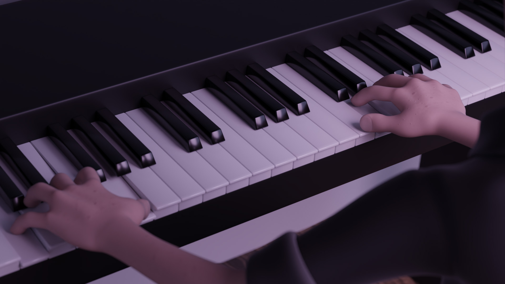

Description du projet
Logiciels utilisés
• Blender
• Adobe Premiere Pro
Après avoir visionné une vidéo d'un pianiste qui s'est présentée dans mes
recommandations YouTube, j'ai été captivé par son contenu et inspiré pour créer quelque chose de
nouveau.
J'ai ainsi procédé à la création d'une animation sur Blender en utilisant le rig de Studio Blender,
en modélisant et animant la scène dans sa totalité.
Ensuite, j'ai superposé l'audio avec la composition réalisée sur Adobe Premiere Pro. Cette expérience m'a permis de développer davantage mes compétences en animation,
notamment la synchronisation entre le son et l'image.
Année : 2023
Images du projet
Glissez vers la droite pour naviguer ! Cliquez pour agrandir les images !



